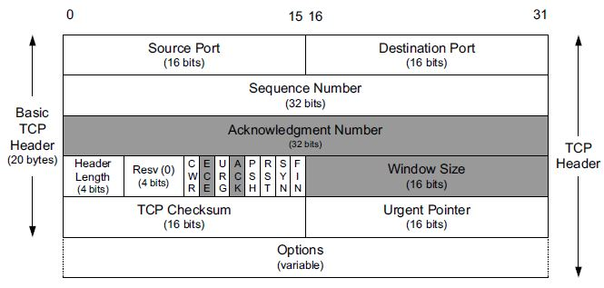
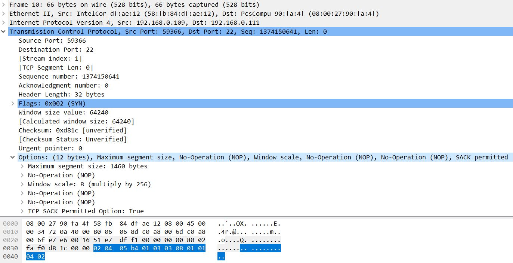

TCP SYN Packet
Except the purpose to establish the connection, some other important information in tcp SYN packet but usually be ignored.
Example of SYN packet tcp header
- TCP Header Layout
 - TCP SYN Packet Parsed by wireshark

Summary of tcp header options(up to 40 Bytes)
| Kind | Length | Name | Reference | Description and Purpose |
|---|---|---|---|---|
| 0 | 1 | EOL | RFC0793 | End of Option List |
| 1 | 1 | NOP | RFC0793 | No Operation(used for padding/alignment) |
| 2 | 4 | MSS | RFC0793 | Maximum Segemnt Size |
| 3 | 3 | WSOPT | RFC1323 | Window Scaling Factor(left-shift amount on window) |
| 4 | 2 | SACK-Permitted | RFC2018 | Sender supports SACK options |
| 5 | Var. | SACK | RFC2018 | SACK block(out-of-order data received) |
| 8 | 10 | TSOPT | RFC1323 | Timestamps option |
| 28 | 4 | UTO | RFC5482 | User Timeout(abort after idle time) |
| 29 | Var. | TCP-AO | RFC5925 | Authentication option(using various algorithms) |
| 253 | Var. | Experimental | RFC4727 | Reserved for experimental use |
| 254 | Var. | Experimental | RFC4727 | Reserved for experimental use |